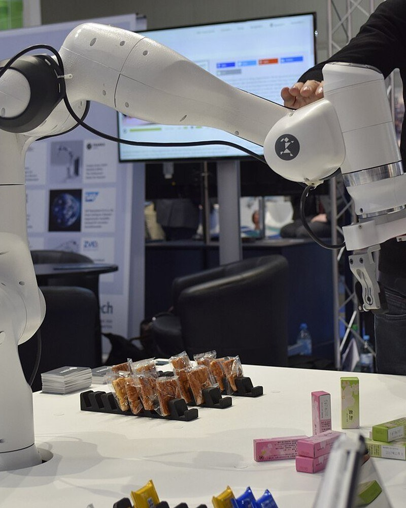
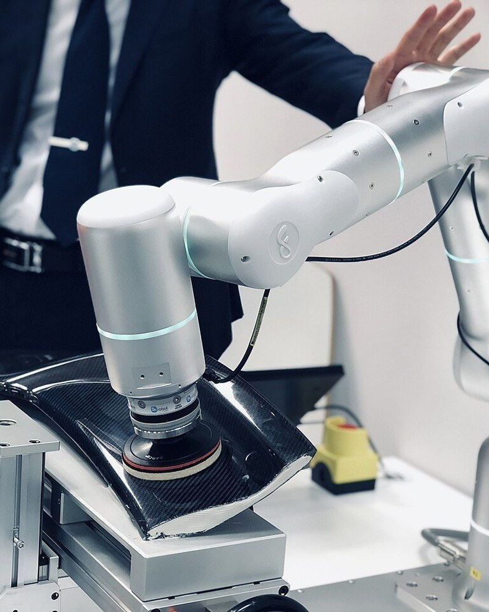
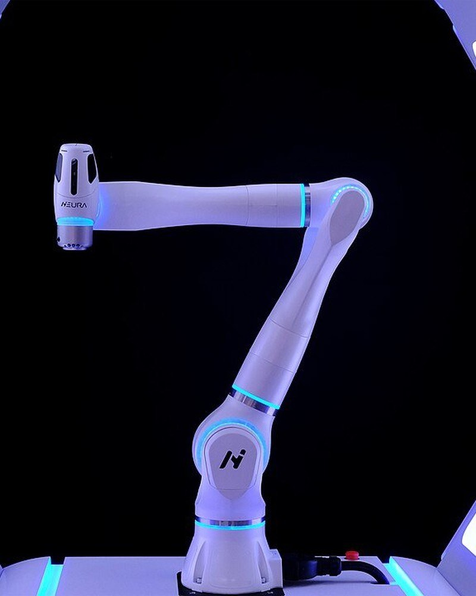
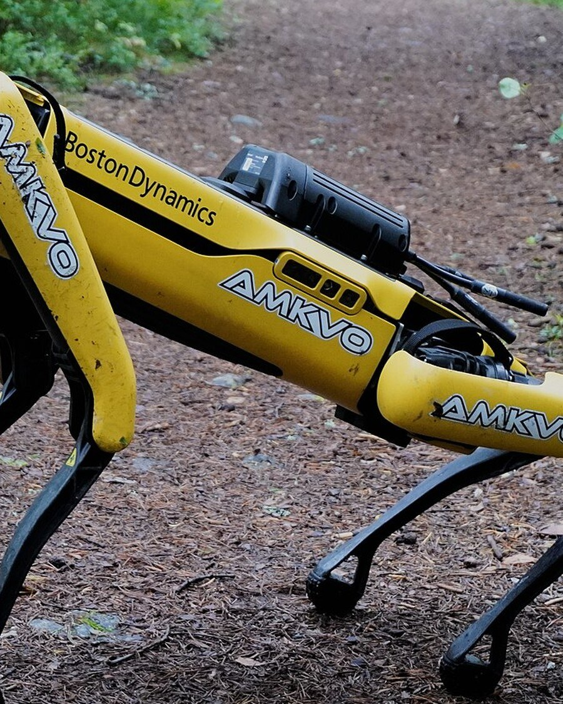
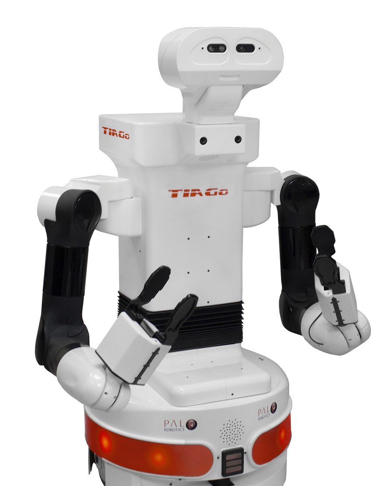
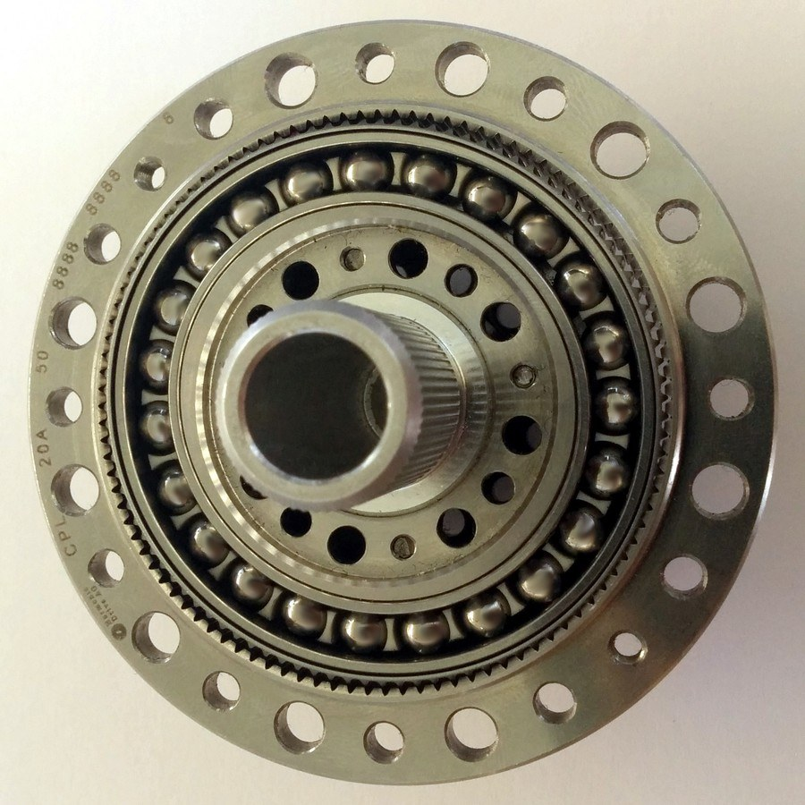
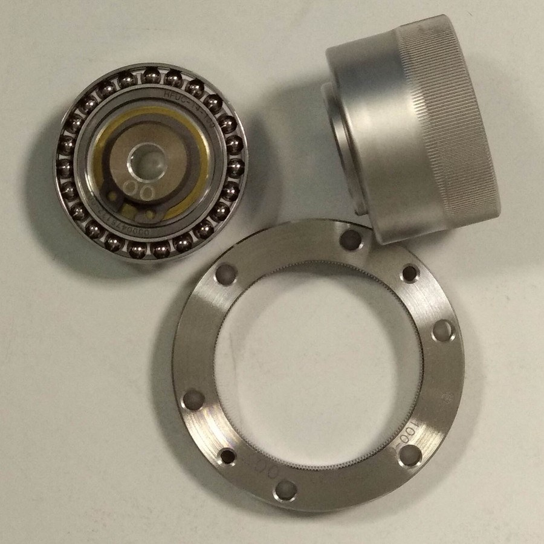
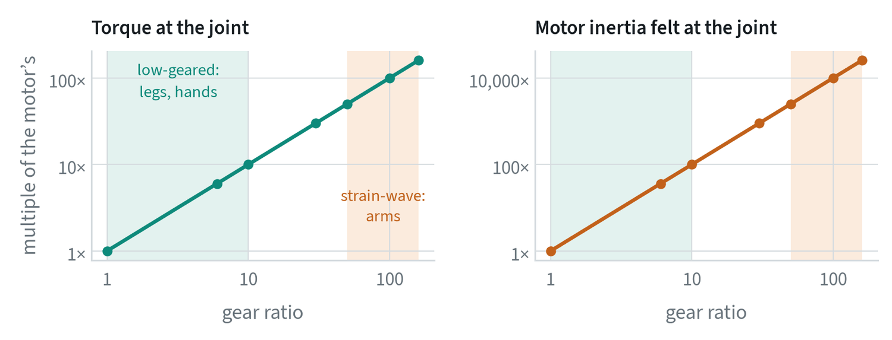

Four robots you will meet
The methods in this guide run on machines like these. The bodies differ, and the recipe is the same: cameras in, action chunks out.







Two more bodies




| Robot | Type | Driven joints | Payload | Reach or size | Notes |
|---|---|---|---|---|---|
| Franka Research 3 | Research arm | 7 | 3 kg | 855 mm reach | A torque sensor in every joint |
| Universal Robots UR5e | Collaborative arm | 6 | 5 kg | 850 mm reach | Repeatability ±0.03 mm; force sensing at the tool flange |
| Boston Dynamics Spot | Quadruped | 12 | 14 kg | 32.5 kg; 1.6 m/s | Three joints per leg; an arm is an option |
These figures are from the makers’ published specifications. Two columns deserve a comment. Payload is what the arm can hold at full reach, and it includes the gripper, so a 1 kg hand on a 3 kg arm leaves 2 kg. Repeatability is how closely the arm returns to a position it has visited before. It is not accuracy, which is how close it gets to a commanded position it has never visited, and which is typically several times worse. Learned policies depend on neither as much as classical programs do, because they close the loop through the camera.
What the body decides
The same learning methods run on very different machines. The body sets the action space, the data you can collect and what can go wrong. Degrees of freedom below are typical ranges.
| Embodiment | Degrees of freedom | Strengths | Challenges for learning |
|---|---|---|---|
| Arms and collaborative robots | 6 or 7, plus gripper | Precise, mature, safe to work beside | A fixed base limits reach and the tasks available |
| Parallel grippers | 1 | Simple, robust, easy to learn | Cannot re-orient an object in the hand |
| Dexterous hands | 12 to 20 or more | Human-like manipulation | Hard to teleoperate, fragile, a large action space |
| Mobile manipulators | An arm on a moving base | Large workspace | Base and arm must be coordinated |
| Quadrupeds | 12 | Stable on rough terrain | Little manipulation unless an arm is added |
| Humanoids | 20 to 50 or more | Fit human spaces and tools; can learn from human video | Balance, whole-body control, cost and data collection |
Most public manipulation data comes from single arms with parallel grippers, so that is where policies are strongest today.
Actuators: what moves the joints
A motor is fast and weak. A joint needs to be slow and strong. The gearbox in between decides how the robot behaves in contact, and it is the least discussed and most consequential hardware choice in robot learning.




The gear in the photographs is the kind found in almost every robot arm. An elliptical bearing deforms a thin toothed cup so that it meshes with a rigid ring at two points. The ring has two more teeth than the cup, so one turn of the bearing advances the cup by two teeth. Ratios of 50 to 160 fit in a flat package with no backlash, which is why arms can be both precise and compact.
A gearbox of ratio multiplies the motor’s torque by and divides its speed by . It also multiplies the motor’s inertia, as felt at the joint, by :


At a ratio of 100 the rotor’s inertia is multiplied by 10,000. The joint then behaves as though a heavy flywheel were attached. It cannot give way quickly when it hits something, and friction in the gearbox hides external forces from the motor, so the motor current says little about contact.
| Design | Gear ratio | Strength | Weakness | Where |
|---|---|---|---|---|
| Strain-wave geared | 50 to 160 | Compact, precise, strong | High felt inertia; contact is invisible without a torque sensor | Arms; add a joint torque sensor to recover force control |
| Low-geared (quasi-direct drive) | 6 to 10 | Gives way on impact; motor current reveals contact forces | Large, heavy motors for a given torque; runs hot holding a load | Legged robots, some hands |
| Series elastic | High, with a spring in series | The spring measures force and absorbs shocks | The spring limits how fast force can change | Some humanoids and research arms |
| Hydraulic | None | Very high power for the weight | Pumps, hoses, leaks, noise | Large legged machines |
| Tendon-driven | Varies | Motors can sit away from the joint | Stretch, friction and wear | Hands |
This choice reaches all the way into learning. A stiff, highly geared arm under position control replays a demonstration exactly and is unforgiving in contact, so its policies must be precise. A low-geared or torque-controlled robot is compliant and tolerant of small errors, and it shows forces in its own motor currents, which gives the policy a sense of touch for free. Demonstrations collected on one kind do not transfer cleanly to the other.
Power and compute on board
Everything a mobile robot does runs from a battery. Motors dominate while it moves, and the computer dominates while it thinks: a GPU capable of running a large policy draws tens to a few hundred watts continuously, comparable to the motors of a walking humanoid at rest. That budget is why policies are compressed, why the largest model is often run off the robot, and why the split into slow and fast systems matters.
Heat is the companion limit. Motors that hold a load without moving, as a low-geared leg does when standing, turn their current into heat, and a robot can be limited by motor temperature long before its battery is empty.
Sensing
A policy can only use what its sensors provide, so choosing and placing sensors is part of designing the robot. Cameras are the main input: scene cameras for context, and wrist cameras for a close view of the grasp. Body state is always available. Force, touch and sound matter once contact begins. The note on senses beyond vision covers each of these, what its data looks like, and how a model takes it in.
A useful test for any sensor layout: sit a person at the teleoperation station with only the robot’s camera views. If they cannot do the task, the policy cannot either.
Common mistakes
- Moving a camera after collecting data. The policy has learned the old viewpoint.
- Expecting a policy to transfer between bodies for free. A different arm, gripper or camera layout usually needs new data.
- Leaving out touch because data is scarce. It is under-used because tactile data is hard to collect, not because it is unimportant.
Terms
- Degrees of freedom
- The number of independent ways a robot can move.
- End effector
- The tool at the end of the arm, usually a gripper or hand.
- Collaborative robot
- An arm designed to work safely beside people.
- Whole-body control
- Coordinating legs, torso and arms together.
- Gear ratio
- How many turns of the motor make one turn of the joint.
- Reflected inertia
- The motor’s own inertia as felt at the joint, multiplied by the square of the gear ratio.
- Backdrivable
- Able to be moved by an external force acting on the joint.
- Repeatability
- How closely a robot returns to a position it has visited before.